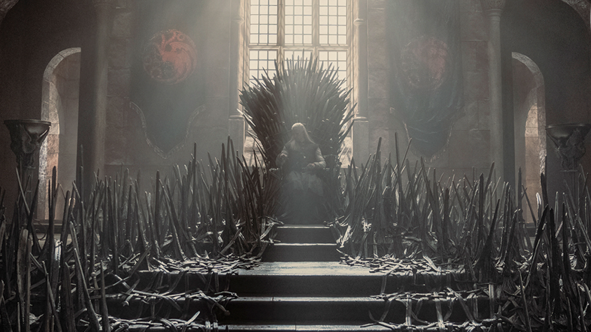
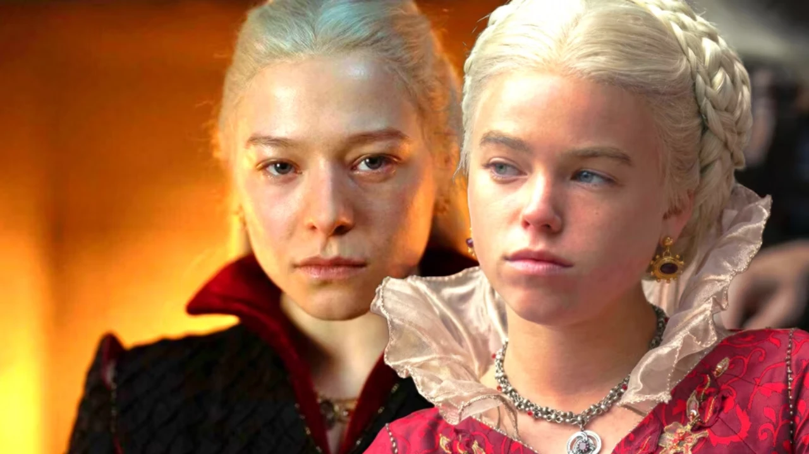

 House of the dragon House of the dragon ou "A casa do dragão" foi um sucesso desde o seu lançamento,a série derivada dos livros de George R. R. Martin vem conquistando ainda mais o publico.
 House of the Dragon: 2ª temporada desaponta fãs com notícia Estrela de House of the Dragon confirmou novidade sobre a segunda temporada que acabou desapontando fãs. Veja detalhes.
HBO surfa no sucesso de House of the Dragon e planeja novo spin-off de GOT A história será baseada em Aegon Targaryen, o primeiro rei que sentou no trono de ferro, conquistou seis dos Sete Reinos e fundou a soberana dinastia Targaryen